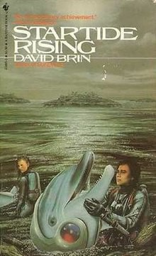
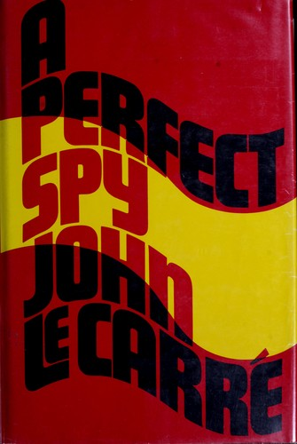

weekly digest
Week 2026-39
Recommendations for the week of 21 September 2026.
Three edges the recent highbrow picks left alone. The poetry shelf — still near-empty — gets its first Arabic voice, the Palestinian national poet, keeping the ideas-first, unconsoling register the collection already prefers. The narrative-history thread reaches India and the age of the chartered company, a domain well outside the Greece/Rome-and-World-Wars grooves. And the non-Western philosophy edge opens classical China as live argument about language and knowledge, not doctrine. The comfort picks stay in the three best-loved veins — big-idea SF, Golden-Age crime, cold-weather espionage — but reach for fresh titles: an uplift space opera, a locked-room murder in a law firm, and le Carré's most personal book.
Highbrow

Lowbrow

